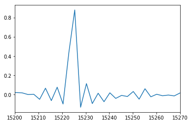
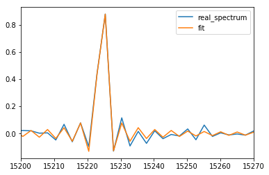

Modelling and fitting a single line spectrum¶
In [1]:
# inline plotting for jupyter notebook. Do not put this line in a real python script.
%matplotlib inline
In [2]:
import orb.fit
import pylab as pl
import numpy as np
Retrieve the observation parameters of a cube of data¶
Basic observation parameters can be retrieved from any data cube. They are useful to simulate a spectrum which corresponds to your data.
In [3]:
# import base class for the manipulation of a SITELLE spectral cube: HDFCube
from orcs.core import HDFCube
In [4]:
# load spectral cube
cube = HDFCube('/home/thomas/M31_SN3.merged.cm1.1.0.hdf5')
print 'step (scan step size in nm): ', cube.params.step
print 'order: ', cube.params.order
print 'resolution: ', cube.params.resolution
print 'theta (incident angle at the center of the frame in degrees): ', cube.params.theta
print 'axis correction coefficient (calibration coefficient of the wavenumber axis which only depends on theta)', cube.params.axis_corr
17-07-16|14:48:55 # HDFCube.__init__ > Data shape : (2048, 2064, 840)
17-07-16|14:48:55 # HDFCube.__init__ > Cube is in WAVENUMBER (cm-1)
17-07-16|14:48:55 # HDFCube.__init__ > Cube is CALIBRATED
step (scan step size in nm): 2943.025792
order: 8
resolution: 4910.44370002
theta (incident angle at the center of the frame in degrees): 15.4447050003
axis correction coefficient (calibration coefficient of the wavenumber axis which only depends on theta) 1.03746502972
Model a spectrum with one Halpha line¶
In [5]:
from orb.core import Lines
halpha_cm1 = Lines().get_line_cm1('Halpha')
step = 2943
order = 8
resolution = 5000
theta = 15.5
axis_corr = 1. / np.cos(np.deg2rad(theta))
# model spectrum
velocity = 250
broadening = 15
spectrum = orb.fit.create_cm1_lines_model([halpha_cm1], [1], step, order, resolution, theta, fmodel='sincgauss',
sigma=broadening, vel=velocity)
# add noise
spectrum += np.random.standard_normal(spectrum.shape) * 0.03
spectrum_axis = orb.utils.spectrum.create_cm1_axis(np.size(spectrum), step, order, corr=axis_corr)
pl.plot(spectrum_axis, spectrum)
pl.xlim((15200, 15270))
Out[5]:
(15200, 15270)

Fit the spectrum with a classic Levenberg-Marquardt algorithm¶
In [7]:
nm_laser = 543.5 # wavelength of the calibration laser, in fact it can be any real positive number (e.g. 1 is ok)
# note: an apodization of 1 means: no apodization (which is the case here)
#
# pos_cov is the velocity of the lines in km/s. It is a covarying parameter,
# because the reference position -i.e. the initial guess- of the lines is set
#
# sigma_guess is the initial guess on the broadening (in km/s)
fit = orb.fit.fit_lines_in_spectrum(spectrum, [halpha_cm1], step, order, nm_laser, axis_corr, 0,
wavenumber=True, apodization=1, fmodel='sincgauss',
pos_cov=velocity, sigma_guess=broadening)
print 'velocity (in km/s): ', fit['velocity_gvar']
print 'broadening (in km/s): ', fit['broadening_gvar']
print 'flux (in the unit of the spectrum amplitude / unit of the axis fwhm): ', fit['flux_gvar']
pl.plot(spectrum_axis, spectrum, label='real_spectrum')
pl.plot(spectrum_axis, fit['fitted_vector'], label='fit')
pl.xlim((15200, 15270))
pl.legend()
velocity (in km/s): [249.32(90)]
broadening (in km/s): [15.5(1.7)]
flux (in the unit of the spectrum amplitude / unit of the axis fwhm): [1.226(53)]
Out[7]:
<matplotlib.legend.Legend at 0x7f8a4add1e50>

In [ ]: